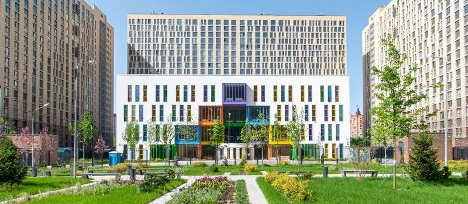
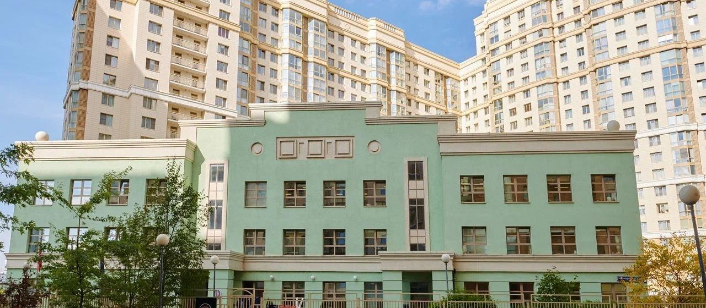

Билингвальная школа: как устроено обучение на двух языках и что получает ребёнок к 11 классу

 Статью написала педагог ONE!Орлова Екатерина ПавловнаУчитель английского языка10 лет практикиВ школе с 2016 годаВедёт английский со 2 по 11 класс и разговорный клуб. Строит уроки вокруг ситуаций, где язык нужен для дела.
Статью написала педагог ONE!Орлова Екатерина ПавловнаУчитель английского языка10 лет практикиВ школе с 2016 годаВедёт английский со 2 по 11 класс и разговорный клуб. Строит уроки вокруг ситуаций, где язык нужен для дела.
«Билингвальная школа» на сайте может означать пять уроков английского в неделю, а может половину предметов на языке и международный экзамен на выходе. Разница между этими вариантами примерно такая же, как между школьным английским и свободным владением. Ниже разбираем, как выглядит билингвальное обучение на практике по ступеням, что оно даёт и чего не даёт, и как отличить настоящую билингвальную школу от школы с усиленным английским.

- Билингвальная школа это когда английский становится языком обучения, помимо того что остаётся предметом. Часть уроков идёт на нём.
- Объём языка растёт по ступеням: среда в начальной школе, предметы на языке в средней, экзамены и профили в старшей.
- Русский язык и ЕГЭ от этого не страдают, если школа держит баланс. Проверяйте результаты.
01Три модели, которые называют одним словом
Усиленный английский
Пять-семь уроков в неделю, сильные учителя, подготовка к экзаменам. Остальные предметы на русском. Это хорошая модель, но не билингвальная: язык остаётся предметом и средой так и не становится. К выпуску ребёнок сдаёт экзамен, но говорит с усилием.
Частичное погружение
Английский ежедневно плюс два-четыре предмета на языке: обычно естествознание, математика в начальной школе, потом география, биология, часть истории. Ребёнок думает на английском хотя бы часть дня. Это то, что мы называем билингвальной школой, и по этой модели работает ONE!.
Полное погружение
Все предметы на английском, русский как отдельный предмет. Это международные школы с зарубежными программами. Сильный язык, но с российской программой и ЕГЭ такая модель совмещается плохо, и русский язык у детей часто страдает.
02Как это выглядит по ступеням
Начальная школа: 1-4 класс
Задача: чтобы английский стал вторым языком среды и перестал быть уроком. Ребёнок из билингвального сада приходит с готовым слухом, и школа продолжает ту же логику.
- Английский каждый день, [уточнить: число] часов в неделю.
- Часть уроков окружающего мира, математики и искусства на английском. Ребёнок считает и рисует на языке, потому что так проще, чем переводить.
- Двое взрослых в классе: учитель и англоговорящий педагог или тьютор. Принцип «один взрослый, один язык» из сада сохраняется.
- Чтение на английском начинается со 2 класса, когда русское чтение уже устойчивое.
К концу 4 класса ребёнок свободно понимает учителя, читает адаптированные книги, говорит простыми фразами без стеснения.
Средняя школа: 5-9 класс
Задача: сделать язык рабочим инструментом.
- Предметы на английском: естествознание, география, часть биологии и истории, информатика. Термины ребёнок узнаёт сразу на двух языках.
- Проектная работа на английском: презентации, дебаты, исследования.
- Первый международный экзамен в 7-8 классе для фиксации уровня: обычно Cambridge KET или PET.
- Русский язык и литература в полном объёме, по программе ФГОС, с подготовкой к ОГЭ.
К 9 классу ребёнок сдаёт ОГЭ по русскому и математике наравне с остальными школами и держит уровень B1-B2 по английскому.
Старшая школа: 10-11 класс
Задача: результат на выходе, и он двойной.
- ЕГЭ по всем предметам на русском. Профили по выбору.
- Английский на уровне подготовки к IELTS или Cambridge FCE/CAE, что открывает зарубежные вузы.
- Предметы на английском остаются в профилях, где это нужно для поступления.
К выпуску ребёнок имеет российский аттестат, баллы ЕГЭ и подтверждённый международным экзаменом уровень английского. Может поступать и в российские, и в зарубежные вузы.

03Что происходит с русским языком
Главный страх родителей, и он обоснованный: в школах полного погружения русский язык у детей действительно проседает. В модели частичного погружения этого не происходит по трём причинам.
Русский язык и литература идут в полном объёме по ФГОС, часы не режутся.
Гуманитарные предметы, где важна речь, остаются на русском: литература, история России, обществознание.
Диктанты, сочинения и ОГЭ показывают, отстаёт ли ребёнок. Если да, школа это видит рано.
Проверить просто: попросите средний балл ЕГЭ по русскому языку за три года. Если он не ниже среднего по Москве, баланс держится.
04Что билингвальная школа даёт, а что нет
- свободное понимание и речь без страха к 9 классу;
- международный экзамен к выпуску без репетиторов;
- возможность поступать за рубеж без года языковых курсов;
- терминологию по естественным наукам на двух языках, что полезно в любом вузе.
- гарантии высокого балла ЕГЭ по английскому. ЕГЭ проверяет свои форматы, к ним всё равно нужно готовиться отдельно;
- автоматически сильной академики по другим предметам. Язык это среда, математику он не заменит;
- результата, если ребёнок пришёл в 8 классе без базы. Позднему переходу нужна отдельная программа догоняющего английского.
05Как отличить настоящую билингвальную школу
Пять вопросов на экскурсии.
Какие предметы идут на английском в каждом классе? Просите расписание.
Кто ведёт эти предметы: предметник со знанием языка или учитель английского, читающий учебник по географии?
Сколько часов английского в неделю по классам?
Какие международные экзамены сдают дети и в каком классе?
Средний балл ЕГЭ по русскому за три года.
Школа, которая отвечает цифрами на все пять, билингвальная. Школа, которая отвечает словами, усиленная.
Английский с первого класса ежедневно, часть предметов на языке с начальной школы. Ученики приходят из наших садов с готовым слухом, о том, как это закладывается, рассказали в статье про билингвальный сад. Средний балл ЕГЭ выпускников 82, [уточнить: балл по русскому и по английскому]. Международные экзамены: [уточнить: какие и в каких классах]. Выпускники поступают в вузы России и за рубеж.
06Частые вопросы
Можно. Первый год ребёнок получает дополнительный английский и часть предметов слушает с поддержкой педагога. К 6-7 классу разница выравнивается.
В школьном возрасте нет. Языки разведены по предметам и по учителям.
До 10 класса нет. В 10-11 может понадобиться для форматов ЕГЭ, и то не всем.
Английский всё равно пригодится: в любом сильном вузе половина литературы на нём. А ЕГЭ по английскому с высоким баллом даёт дополнительные варианты при поступлении.
07Что дальше
Приходите на экскурсию в учебный день и посидите на уроке, который идёт на английском. Услышите, как это звучит на самом деле. Телефон +7 (495) 152-22-21.